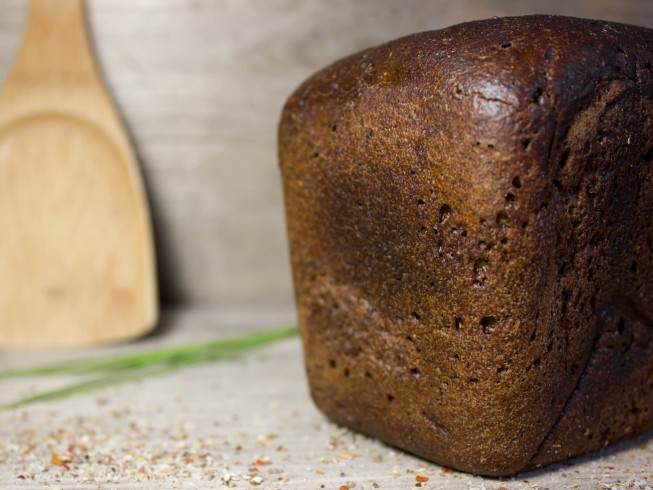

Black Bread

Description
This is a low-sodium black bread recipe from the book The No-Salt, Lowest-Sodium International Cookbook by Donald and Maureen Gazzaniga. It is designed to be made in a bread machine. The bread has fennel and caraway seeds, coffee and cocoa in it which gives it a very unique flavor. I really like this bread toasted with butter, or paired with a hearty stew.
Ingredients
- 1 1/4 cups plus 2 tablespoons low-sodium water plus more as needed
- 1/2 rounded teaspoon instant decaffinated coffee crystals
- 2 tablespoons cider vinegar
- 2 1/4 cups unbleached bread flour
- 1/4 cup potato flour
- 1 cup dark or light rye flour
- 1/4 teaspoon ascorbic acid (I use one 1000mg vitamin C tablet)
- 1 tablespoon vital wheat gluten (I have found that adding an extra 2/3 tablespoon helps the bread rise better)
- 1/2 teaspoon onion powder
- 2 tablespoons extra-virgin olive oil
- 2 tablespoons molasses
- 1 tablespoon brown sugar, packed
- 3 tablespoons unsweetened cocoa powder
- 1 tablespoon caraway seeds
- 2 3/4 teaspoons bread machine yeast
- 1/4 teaspoon fennel seeds, optional
Steps
- Place all the ingredients into the bread machine in the order listed.
- Set the bread machine to White, 2-Pound loaf, Medium Crust.
- When the bread is done, remove it from the pan.
- Place the bread on a rack to cool before slicing.
- Store in a sealed bag to retain freshness.